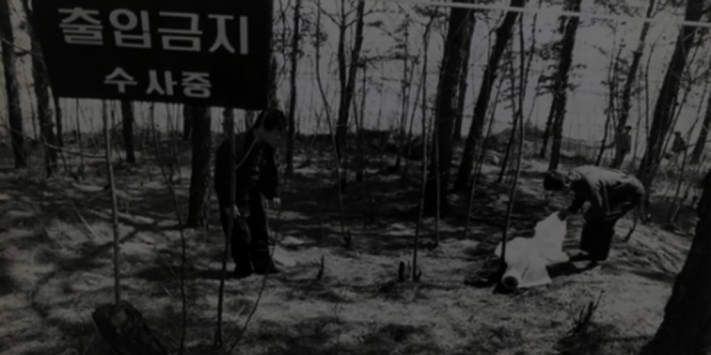

1986년부터 1991년까지 경기도 화성군 일대에서 일어난 단군 이래 최악의 살인 사건, 화성 연쇄 살인 사건의 유력 용의자가 10,386일만에 잡혔다. 용의자는 현재 성폭행과 살인 사건으로 수감중인 무기수 56살 이춘재이며 5, 7, 9차 범행에서 DNA가 일치하는 것으로 판명났다. 하지만 나머지 범행은 이춘재의 DNA와 일치하지 않고있고 혐의를 강력 부인하고 있어 아직 진범이라고 특정짓기엔 어려운 상황이다. 하지만 확실한 것은 그가 이 사건의 유력 용의자이며 영원히 묻혀질 뻔한 대한민국 3대 미제 사건중 한 사건의 용의자를 잡은 셈이다.
01.
CCP Project
통계청에 따르면 2017년 대한민국 총 범죄 발생 건 수 1,666,341건 중 강력범죄 건 수는 27,274건이다. 다행히 이 중 96.6%의 사건이 검거되어 이 수치는 한국의 높은 치안율을 자랑한다. 하지만 간과하는 사실이 하나 있다. 대부분의 살인 사건은 아예 변사 처리가 되어버려 범죄 통계에 포함되지도 않는다는 것이다. 즉, 검거되지않은 나머지 3.4%의 사건들 보다 통계에 포함되지 않은 수많은 미해결 사건이 존재한다는 사실이다. Cold Case Profiling은 미궁 속에 빠져있는 미제 사건들을 소개하고 함께 탐정이 되서 풀어나가는 프로젝트이다. 사건을 하나하나 뜯어서 분석해보고 해결의 실마리를 같이 고민해보는 것이 이 프로젝트의 목표이다. 시간이 많이 흘렀고 공소 시효도 이미 다 끝났다. 하지만 피해자들의 아픔과 피의자들의 치러지지않은 죄값은 아직 그대로 남아있다. CCP 프로젝트는 이들의 아픔을 위로해주고 잊혀지지 않았으면 하는 바램에서 시작되었다.

02.
03.
Profiling List
CCP Project는 총 세 개의 미제 사건들을 다룰 것이다. 첫번째 사건은 1999년 2월 13일에 일어난 송혜희 양 실종 사건이다. 20년이 지난 현재까지도 송 양은 실종 상태이고 그녀의 아버지는 계속해서 딸을 찾아 헤매고 있다. 두번째 사건은 1975년 8월에 일어난 부산 아동 연쇄살인 사건이다. 아동만을 상대로 범행을 저질러 이후에도 추가 범행을 저지른 것이 확정되어도 결국 잡히지않은 희대의 소아성애증 사이코패스 살인마다. 세번째 사건은 1998년 6월 14일에 벌어진 20대 남성 3인조의 학살극이다. 전문가들조차 기겁을 할 정도로 수법이 잔인하고 끔찍한 사건으로 수많은 증거와 DNA, 목격자까지 존재하였으나 끝내 검거에 실패한 비운의 사건이다. 세 사건 모두 경찰의 초동대처 미흡으로 아슬하게 놓친 참극으로 이 사건을 더 많은 사람들이 알아줬으면 하는 바램으로 피해자들의 애환을 조금이나마 덜어줬으면 한다.
04.
대한민국 범죄분석 통계자료
CCP Project는 총 세 개의 미제 사건들을 다룰 것이다. 첫번째 사건은 1999년 2월 13일에 일어난 송혜희 양 실종 사건이다. 20년이 지난 현재까지도 송 양은 실종 상태이고 그녀의 아버지는 계속해서 딸을 찾아 헤매고 있다. 두번째 사건은 1975년 8월에 일어난 부산 아동 연쇄살인 사건이다. 아동만을 상대로 범행을 저질러 이후에도 추가 범행을 저지른 것이 확정되어도 결국 잡히지않은 희대의 소아성애증 사이코패스 살인마다. 세번째 사건은 1998년 6월 14일에 벌어진 20대 남성 3인조의 학살극이다. 전문가들조차 기겁을 할 정도로 수법이 잔인하고 끔찍한 사건으로 수많은 증거와 DNA, 목격자까지 존재하였으나 끝내 검거에 실패한 비운의 사건이다. 세 사건 모두 경찰의 초동대처 미흡으로 아슬하게 놓친 참극으로 이 사건을 더 많은 사람들이 알아줬으면 하는 바램으로 피해자들의 애환을 조금이나마 덜어줬으면 한다.